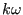

Postprocessing is only done for geometrical design variables. The postprocessing procedure is coded in sensitivity.c and consists of the following steps:
Now the steps are treated in more detail:
| (552) |
Since p belongs to the subspace it can be written as a linear combination of
the basis vectors , where  is a mx1 vector of
coefficients. Consequently:
is a mx1 vector of
coefficients. Consequently:
| (553) |
from which x can be solved yielding:
|  | (554) |
The complement of the projection vector is
. Denoting
, the constrained sensitivies  are obtained from the
unconstrained sensitivities
are obtained from the
unconstrained sensitivities  by:
by:
| (555) |
or, in component notation:
| (556) |
where
| (557) |
(no summation over k in the last equation).
Active constraints are constraints which
To this end the algorithm starts with all constraints which are fulfilled an removes the constraints one-by-one for which the Lagrange multiplier points to the feasible part of the space.